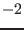

Next: Feature Rules Condition Syntax Up: Feature Extraction Module Previous: Rule Syntax Contents
Each feature rule has a feature-name-pattern that describes how
the generated feature name will be.
The following characters are special and are interpreted as variables, and replaced by the corresponding values:
@: will be replaced with the relative
position of the matching word with respect to the target
word. Thus, the rule
punct_mark@ [-2,2] t matches ^F
But the rule punct_mark [-2,2] t matches ^F
will
generate the same feature for all words in the window that
are punctuation signs (e.g. it will generate punct_mark
twice for the word John in the avobe example).
Repeated features are stored only once.
$ introduces a variable that must have
the format: $var(position).
Allowed variable names
are: W (word form, in its original casing), w
(word form, lowercased), l (word lemma), T
(word full PoS tag), t (word short PoS tag), a
(word lemma+Pos tag). All above variables refer to the
analysis selected by the tagger. Variable names may be
prefixed with p (e.g. pT, pl, pa,
etc.) which will generate the feature for all
possible analysis of the word, not just the one selected
by the tagger.
The position) indicates from which word (relative to
the focus word) the value for the variable must be taken.
For instance, the pattern: pbig@:$w(0)_$pt(1) will
extract features that will contain the relative position
(@), plus a bigram made of the word form of the
current word in the window ($w(0)) plus each possible
PoS tag of the word right of it ($pt(1)).
In the sentence John lives here., the features for
word here in a window of [-2,0] with the above
pattern would be: pbig@-2:john_VBZ,
pbig@-2:john_NNS, pbig@-1:lives_RB, and
pbig@0:here_Fp. Note that there are two features
generated for window position  because the word
lives has two possible PoS tags.
{functname(position)},
where functname is the name of the function as
declared in the custom feature functions map (see section
4.4.5). The position parameter is the relative
position to the focus word, and is interpreted in the same
way than in the primitive features $w(position),
$t(position), etc., described above.
{quoted(-1)}_{quoted(0)}
t(-1)_t(0)
quoted
instead of the PoS tag for the corresponding word.
Lluís Padró 2013-09-09